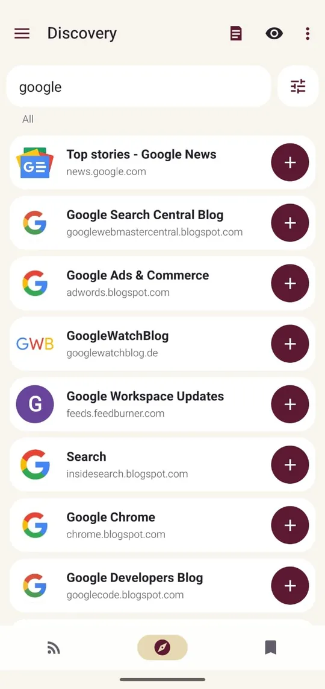
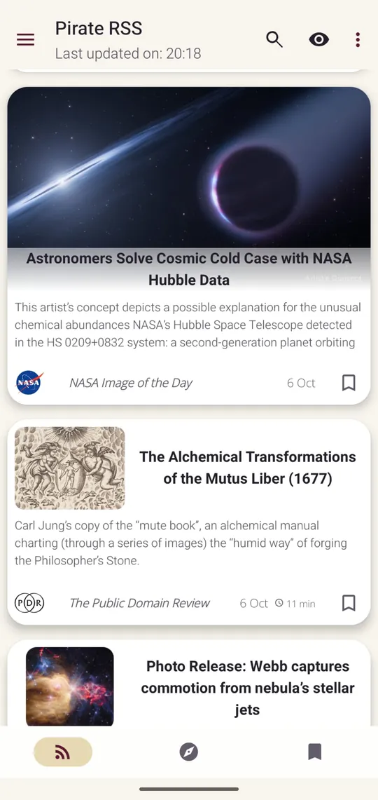
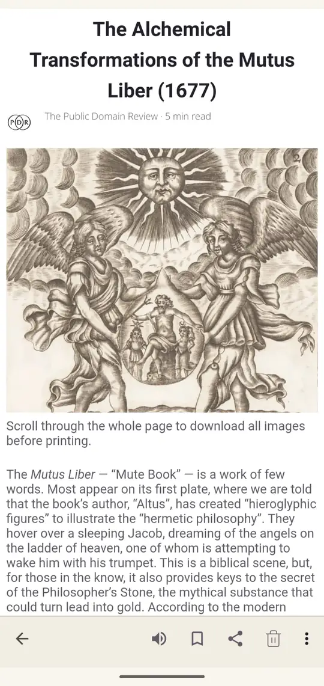
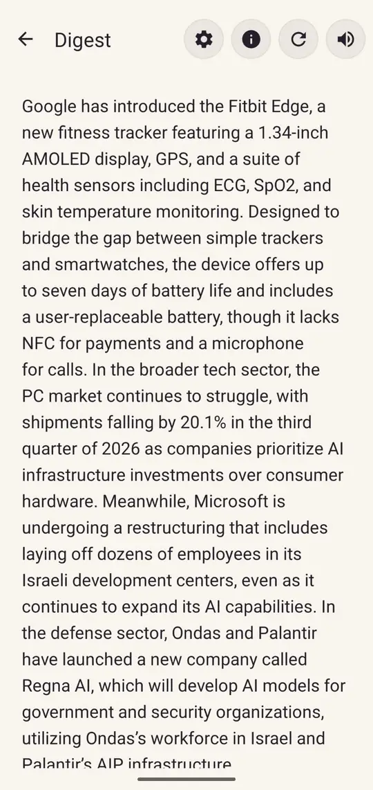
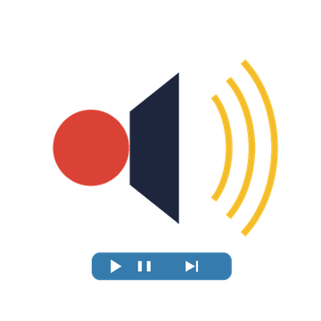
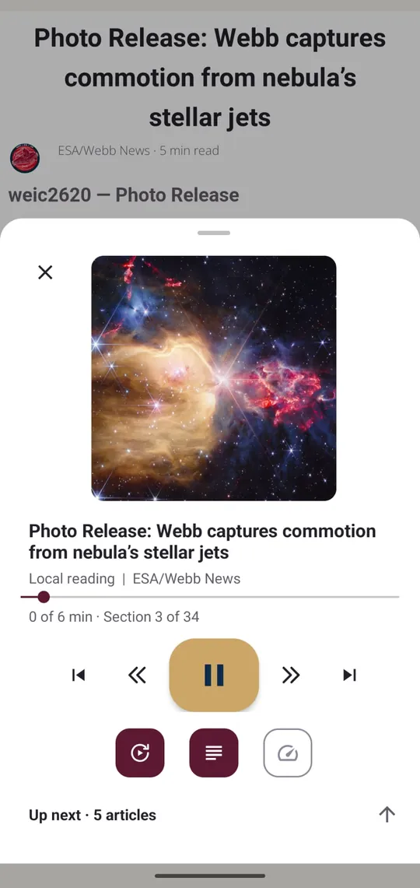
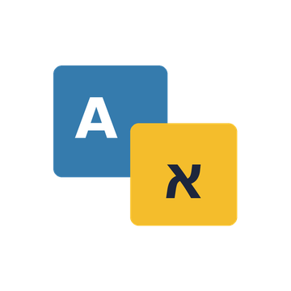
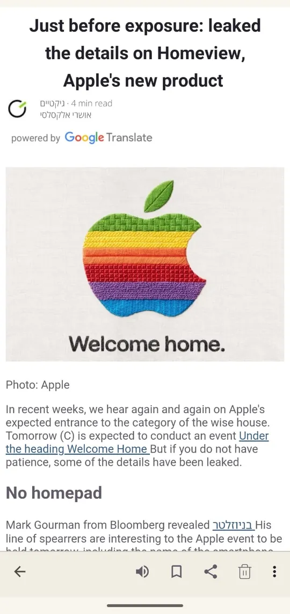
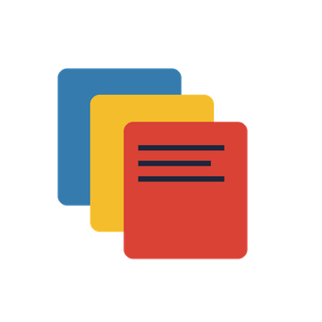
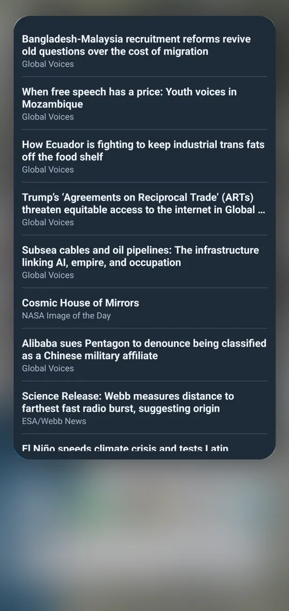

01
خلاصة واحدة لكل مصادرك
أضف المواقع والمدونات، ورتّبها في مجلدات، واعثر على مصادر جديدة عبر البحث.


Pirate RSS قارئ لمن يتابع الكثير من المدونات والمواقع. أضف مصادرك، وافتح التطبيق، واقرأ.
احصل عليه من Google Play
تنشر معظم المواقع خلاصة دون أن تلاحظ: قائمة بسيطة بأحدث مقالاتها. يجمع تطبيق RSS هذه الخلاصات من كل موقع تضيفه ويعرضها معًا، الأحدث أولًا.
فبدلًا من فتح عشر علامات تبويب لترى ما الجديد، تفتح تطبيقًا واحدًا. أنت تقرر أي المواقع تتابع، وهذا بالضبط ما تراه.
أضف المواقع والمدونات، ورتّبها في مجلدات، واعثر على مصادر جديدة عبر البحث.

نص المقال مع صوره، ومظهر فاتح وداكن، ودعم للكتابة من اليسار إلى اليمين ومن اليمين إلى اليسار.

ملخص قصير لأحدث المقالات من المصادر التي تختارها.


استمع إلى المقال مقروءًا بصوت عالٍ، والمقالات التالية في قائمة الانتظار. تحكّم في التشغيل من الإشعار.


ترجم المقال إلى لغة التطبيق واختر طريقة الترجمة.


فحص ذكي اختياري يجمع المقالات المتشابهة في مجموعة واحدة. افتحها واختر ما تقرؤه.
تُنسخ الإعدادات والمقالات المحفوظة احتياطيًا إلى السحابة. أو تابع ببساطة كضيف.
العناوين على شاشتك الرئيسية، من كل مصادرك أو من مصدر واحد تختاره.

متوفر بأربع لغات.
أضف موقعين أو ثلاثة، وانظر إن كان يناسب طريقتك في القراءة.
احصل عليه من Google Play